Нелинейные резистивные элементы. Напомним, что нелинейными называются электрические цепи, у которых реакции и воздействие связаны нелинейными зависимостями. Подобные цепи содержат один или несколько приборов, замена которых линейными моделями приводит к недопустимому нарушению количественной и качественной картины колебаний в цепи.
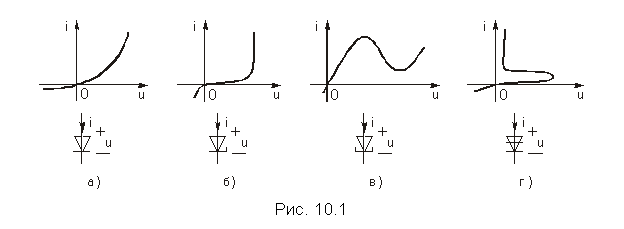
Для построения многих функциональных узлов аппаратуры связи используется большой класс нелинейных двухполюсных полупроводниковых и электронных приборов, называемых диодами. Единственной электрической характеристикой диода является его вольт-амперная характеристика (ВАХ) - зависимость постоянного тока в диоде от постоянного напряжения на его зажимах i = F(u) при согласном выборе положительных направлений напряжения и тока. Отличительные особенности вольт-амперных характеристик некоторых типов диодов различного назначения и их условные (схемные) обозначения приведены на рис. 10.1. Это характеристики полупроводниковых приборов: выпрямительного диода (рис. 10.1, а), стабилитрона (рис. 10.1, б), туннельного диода (рис. 10.1, в) и динистора (рис. 10.1, г). Характеристики рис. 10.1, а, б получили наименование однозначных, а рис. 10.1, в, г - многозначных, так как у них одному и тому же значению тока (рис. 10.1, в) или напряжения (рис. 10.1, г) соответствуют разные напряжения и токи.
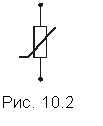
Существуют и электронные приборы с подобными характеристиками.В последующем, простоты ради, нелинейные резистивные двухполюсники будем называть нелинейными резисторами. Схемное изображение нелинейного резистора приведено на рис. 10.2.
Некоторые из нелинейных резисторов относятся к числу управляемых нелинейных элементов. Управляющей величиной может быть, например, внешняя температура, давление или освещенность. Свойства таких резисторов определяются не одной, а семейством ВАХ, каждая из которых соответствует различным значениям управляющей величины.
Транзисторы, электронные лампы, тиристоры и некоторые другие полупроводниковые и электронные приборы могут рассматриваться как нелинейные резистивные четырехполюсники. Например, при включении транзистора рис. 10.3, а, являющегося трехполюсником, в электрическую цепь один из зажимов оказывается общим для пары входных и пары выходных зажимов транзистора. Поэтому транзистор принято рассматривать как четырехполюсник с двумя парами зажимов. На рис. 10.3, б показано такое включение транзистора по схеме с общим эмиттером.
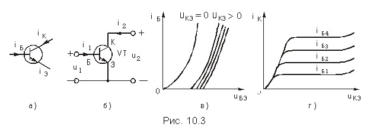
Для включения транзистора по схеме с общим эмиттером (рис. 10.3, б) u1 = uБЭ – напряжение между базой и эмиттером, i2 = iК – ток коллектора, i1 = iБ – ток базы и u2 = uКЭ – напряжение между коллектором и эмиттером.
Уравнения (10.1) и (10.2) изображаются в виде графиков. Так u1 зависит от двух переменных i1 и u2 и, вообще говоря, его графическое изображение представляет собой поверхность в трехмерном пространстве. Так как начертить такую поверхность трудно, то функцию двух переменных изображают на плоскости в виде семейства характеристик: фиксируется одна переменная и непрерывно изменяется другая.
Графическое изображение уравнений (10.1) и (10.2) для транзистора в схеме с общим эмиттером показано на рис. 10.3, в и г. Это так называемые входная и выходная вольт-амперные характеристики. Принято говорить, что ВАХ транзистора управляются током или напряжением. Так, выходная ВАХ транзистора в схеме с общим эмиттером управляется током базы.
ВАХ нелинейных полупроводниковых и электронных приборов находятся, как правило, в результате измерений и приводятся в соответствующих справочниках в виде усредненных графических зависимостей. Необходимость усреднения связана с большим (до 30—50%) технологическим разбросом характеристик различных образцов прибора одного и того же типа. Эти характеристики являются статическими, т. е. характеристиками режима постоянного тока.
Для резистивных нелинейных элементов (НЭ) важным параметром является их сопротивление, которое в отличие от линейных резисторов не является постоянным, а зависит от того, в какой точке ВАХ оно определяется. Различают два вида сопротивлений: статическое и дифференциальное (динамическое). Статическое сопротивление Rст определяется как (рис. 10.4)
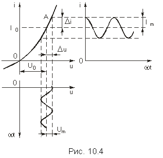
где U0 – приложенное к НЭ постоянное напряжение; I0 – протекающий через НЭ постоянный ток. Это сопротивление постоянному току; оно характеризуется тангенсом угла наклона прямой, проходящей через начало координат и рабочую току (U0, I0) на ВАХ НЭ.В силу предположения о резистивном характере цепи статические характеристики определяют одновременно и соотношения между мгновенными значениями напряжений и токов на внешних зажимах соответствующего нелинейного прибора.
Определим дифференциальное сопротивление Rд как отношение приращения напряжения Du к приращению тока Di при небольшом смещении рабочей точки на ВАХ под воздействием переменного напряжения малой амплитуды (рис. 10.4):
Это сопротивление представляет собой сопротивление НЭ переменному току малой амплитуды. Обычно переходят к пределу этих приращений и определяют дифференциальное сопротивление в виде
Оно характеризуется тангенсом угла наклона касательной к ВАХ в рабочей точке.
Иногда удобно пользоваться понятием дифференциальной крутизны (имеющей смысл проводимости)
Нелинейные индуктивные элементы. Типичными динамическими нелинейными элементами электрической цепи являются катушки с сердечниками из ферромагнитных материалов – сплавов на основе металлов группы железа или их оксидов – ферритов. Нелинейность таких элементов обусловлена характеристикой намагничивания материала сердечника B(H). Поскольку в приближении теории магнитных цепей для замкнутого неразветвленного сердечника с постоянным сечением s и длиной l средней магнитной линии магнитный поток Ф пропорционален индукции B: Ф = Bs, а напряженность H связана с током i в обмотке, имеющей w витков, соотношением H = iw/l, то вид зависимости B(H) предопределяет характер вебер-амперной характеристики катушки Y(i) (Y = Фw – потокосцепление обмотки см. § 1.2). Типичная вебер-амперная характеристика индуктивного элемента приведена на рис. 10.5, а. В общем случае вид ВАХ индуктивного элемента определяется многими факторами, и она часто является неоднозначной. Например, при циклическом намагничивании сердечника зависимость Y(i) имеет гистерезисный характер (рис. 10.5, б). В этом случае процесс перемагничивания сопровождается необратимыми потерями в сердечнике.
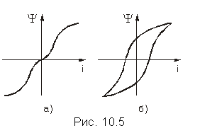
Нелинейный элемент индуктивности характеризуется согласно (1.8) статической индуктивностью Lст = Y/i и дифференциальной индуктивностью Lд = dY/di, которые зависят от намагничивающего тока i.Нелинейные емкостные элементы. Нелинейные емкостные элементы могут служить моделями конденсаторов, диэлектрическая проницаемость e которых является функцией от напряженности электрического поля E в диэлектрике.
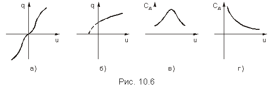
Такие емкостные элементы описываются нелинейной вольт-кулоновой характеристикой – зависимостью заряда q от приложенного напряжения u. Подобными свойствами обладают, в частности, сегнетоэлектрики, вольт-амперные характеристики которых, аналогичны характеристикам ферромагнетиков (рис. 10.6, а); обратно смещенные p-n-переходы (рис. 10.6, б) и др.
Нелинейный элемент емкости характеризуется согласно (1.11) статической емкостью Сст = q/uс и дифференциальной емкостью Сд = dq/duс, которые зависят от приложенного напряжения uс.
На рис. 10.6, в, г, показан характер изменения дифференциальной емкости для вольт-кулонных характеристик, изображенных на рис. 10.6, а и б, соответственно.
Задача нахождения начальных постоянных напряжений и токов на внешних зажимах нелинейных полупроводниковых или электронных приборов, входящих в электрическую цепь, сводится к задаче анализа режима постоянного тока в исследуемой цепи, т. е., к анализу нелинейной резистивной цепи с источниками постоянного напряжения или (и) тока. Решаются подобные задачи обычно с использованием графических построений.
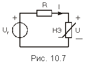
Ниже рассматривается задача анализа режима постоянного тока в электрической цепи с одним нелинейным двухполюсником, – нелинейным резистивным элементом (НЭ). Его ВАХ считается известной и заданной графически.
Рассмотрим простейшую электрическую цепь, изображенную на рис. 10.7. В нее входят источник постоянного напряжения с задающим напряжением Uг, линейный резистивный элемент R и нелинейный резистивный элемент, в котором подлежат определению постоянные напряжение U = U0 и ток I = I0. Рассмотрим два случая НЭ: с однозначной и многозначной ВАХ.
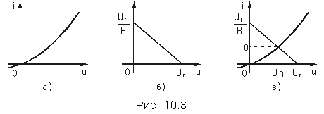
Согласно ЗНК (рис. 10.7) напряжение U = Uг—RI, и ток в элементе R связан с напряжением U на зажимах НЭ зависимостью I = (Uг—U)/R, представляющей собой прямую, проходящую через точки Uг на оси абсцисс и Uг/R – на оси ординат. Поскольку нелинейный и линейный элементы соединены последовательно, то ВАХ НЭ и прямая I = (Uг—U)/R, определяющие один и тот же ток, удовлетворяются одновременно, чему на графиках рис. 10.8, в соответствует точка их пересечения. Она и определяет искомые значения постоянных напряжения U0 и тока I0 в нелинейном резисторе, или, как принято говорить, его рабочую точку.
Графические построения, связанные с решением задачи, всегда выполнимы, а найденное ее решение – единственное.
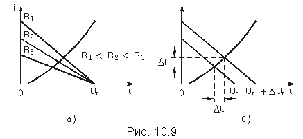
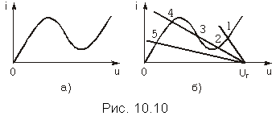
Напомним, что отношение бесконечно малого приращения тока к бесконечно малому приращению напряжения на нелинейном элементе, обусловленных смещением рабочей точки, называется дифференциальной проводимостью (крутизной), а обратное отношение – дифференциальным сопротивлением нелинейного резистора в его рабочей точке.
Отношение постоянных тока и напряжения в рабочей точке нелинейного резистора определяет его статистическую проводимость, а обратное отношение – статическое сопротивление резистора в его рабочей точке.
Статическая проводимость пассивного нелинейного резистора всегда положительна. Положительна и дифференциальная проводимость нелинейного резистора с однозначной вольт-амперной характеристикой в силу возрастающего характера последней. Заметим также, что статическая и дифференциальная проводимости линейного резистора не отличаются одна от другой.
Нелинейный резистивный элемент с многозначной характеристикой. Пусть многозначная ВАХ нелинейного резистивного элемента в схеме рис. 10.7 имеет вид, показанный на рис. 10.10, а. Это характеристика туннельного диода. Для нахождения рабочей точки на ВАХ резистивного НЭ применим те же, что и выше, графические построения.
На рис. 10.10, б совмещены графики вольт-амперной характеристики нелинейного резистора и зависимостей I = (Uг—U)/R для трех различных значений сопротивления линейного резистора R и одного и того же значения напряжения задающего источника Uг.
Анализ рис. 10.10, б показывает, что рабочими точками могут быть точки 1 и 5, соответствующие единственному решению уравнений I = F(U) и I = (Uг—U)/R. Рабочими точками могут быть также точка 2 или точка 4. Точка 3, расположенная па ниспадающем участке ВАХ, является точкой неустойчивого равновесия. Можно показать, что если зафиксировать сопротивление R, при котором могут существовать три точки пересечения указанных зависимостей, и увеличивать задающее напряжение источника от нуля до величины Uг, то рабочей будет точка 4. Если же задающее напряжение источника от очень большого значения уменьшать до значения Uг, то рабочей будет точка 2.
Итак, в цепи с нелинейным двухполюсником, имеющим многозначную ВАХ задачи нахождения рабочей точки не всегда имеет единственное решение.
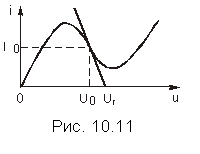
Рабочая точка может быть расположена и на ниспадающем участке вольт-амперной характеристики, если выбрать сопротивление R и задающее напряжение Uг так, как показано на рис. 10.11. Заметим, что в рабочей точке, расположенной на ниспадающем участке вольт-амперной характеристики, дифференциальная проводимость и дифференциальное сопротивление нелинейного резистора отрицательны, поскольку малым положительным значениям приращения напряжения (тока) на зажимах нелинейного резистора соответствуют отрицательные значения приращения тока (напряжения).
Метод эквивалентного генератора. Изложенная методика определения рабочей точки в цепи с одним линейным и одним нелинейным резистивными элементами распространяется на резистивные цепи с одним резистивным НЭ и произвольным числом линейных резистивных элементов и источников постоянного напряжения или (и) тока, если воспользоваться теоремой об эквивалентном генераторе. Для этого следует внешнюю по отношению к нелинейному двухполюснику линейную активную цепь (см. рис. 10.12, а) заменить эквивалентным генератором с задающим напряжением Uэг и внутренним линейным резистивным эквивалентным сопротивлением Rэ (рис. 10.12, б). Тогда схема анализируемой цепи не будет отличаться от схемы рис. 10.7, и задача нахождения рабочей точки сводится к рассмотренной выше.
Напряжения и токи в элементах цепи, внешней по отношению к НЭ, можно найти, воспользовавшись теоремой замещения (см. § 1.7). Для этого нелинейный резистивный элемент следует заменить источником напряжения (источником тока), напряжение (ток) которого равно (равен) найденному значению напряжения (тока) в рабочей точке. Напряжения и токи в линейной части электрической цепи находят любым методом анализа режима постоянного тока.
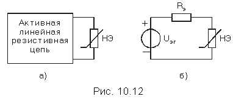
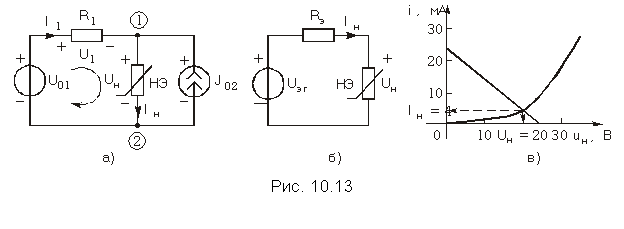
Рассмотрим задачу анализа режима постоянного тока в резистивной электрической цепи с нелинейным четырехполюсником (рис. 10.14).
Пусть входная ВАХ и семейство выходных ВАХ будут иметь вид показанный на рис. 10.15, а и б; управляющим параметром для семейства выходных характеристик четырехполюсника является его входной ток I1.
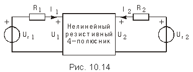 |
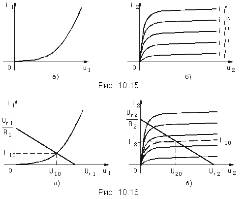
Выходной ток I2 и выходное напряжение U2 (см. рис. 10.14) связаны между собой линейной зависимостью I2 = (Uг2—U2)/R2, которая на рис. 10.16, б представляет собой прямую, проходящую через точки U2 = Uг2 на оси абсцисс и I2 = Uг2/R2 на оси ординат.
Точка пересечения зависимостей I2 = (Uг2—U2)/R2 и i2 = F2(u2) при I1 = I10 и определяет рабочую точку (U20, I20) на выходных характеристиках четырехполюсника.
Дальнейший анализ рассматриваемой цепи может быть связан с нахождением напряжений и токов в ветвях входной и выходной цепей, если до анализа эти цепи были заменены эквивалентными генераторами.
Суть эквивалентных преобразований состоит в замене участков цепи с параллельным или последовательным соединением ветвей одной эквивалентной ветвью путем суммирования их токов или напряжений. Речь здесь идет о суммировании ординат или абсцисс заданных характеристик ветвей цепи. Этот метод особенно эффективен в случае цепи с одним источником: цепь представляется источником и одним эквивалентным нелинейным элементом.
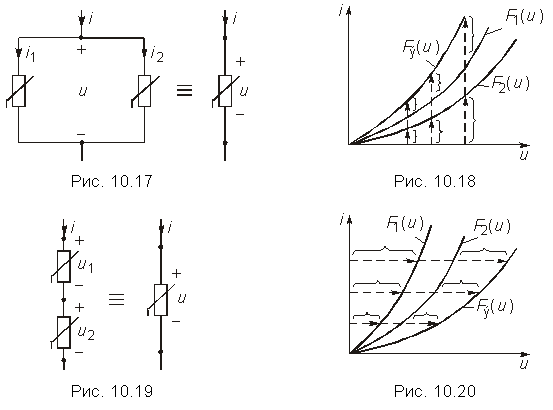
Пусть два НЭ с уравнениями (ВАХ) i1 = F1(u1) и i2 = F2(u2) включены параллельно (рис. 10.17).
Необходимо найти уравнение НЭ, эквивалентного данному соединению элементов. Так как элементы соединены параллельно, то u1 = u2 = u, а по первому закону Кирхгофа i = i1 + i2. Выполним сложение токов графически, как показано на рис. 10.18. Задаемся значением напряжения. При этом значении напряжения находим токи НЭ и суммируем их. Задаемся новым значением напряжения и опять суммируем токи. Таким образом, находим серию точек, соединяя которые, получаем ВАХ эквивалентного НЭ.
Рассмотрим последовательное соединение НЭ (рис. 10.19). В данном случае i1 = i2 = i, a u = u1 + u2. Процесс определения ВАХ НЭ показан на рис.10.20. Заметим, что рассмотренные преобразования применимы и в случае, когда последовательно или параллельно соединены несколько нелинейных, а также линейных элементов.
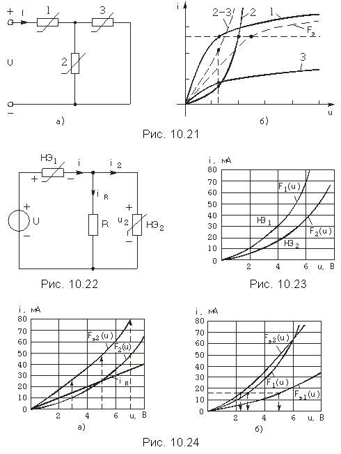
Часто необходимо иметь аналитические выражения для вольт-амперных характеристик нелинейных элементов. Эти выражения могут лишь приближенно представлять ВАХ, поскольку физические закономерности, которым подчиняются зависимости между напряжениями и токами в электронных и полупроводниковых приборах, не выражаются аналитически.
Задача приближенного аналитического представления функции, заданной графически или таблицей значений, в заданных пределах изменения ее аргумента (независимой переменной) предполагает, во-первых, выбор аппроксимирующей функции, т. е. функции, с помощью которой приближенно представляется заданная зависимость, и, во-вторых, выбор критерия оценки «близости» этой зависимости и аппроксимирующей ее функция.
В качестве аппроксимирующих функций используются, чаще всего, алгебраические полиномы, некоторые дробные рациональные и трансцендентные функции или совокупность отрезков прямых линий.
Будем считать, что ВАХ нелинейного элемента i = F(u) задана графически, т. е. определена в каждой точке интервала Umin u Umax, и представляет собой однозначную непрерывную функцию переменной u. Тогда задача аналитического представления вольт-амперной характеристики может рассматриваться как задача аппроксимации заданной функции x(x) выбранной аппроксимирующей функцией f(x).
О близости аппроксимирующей f(x) и аппроксимируемой x(x) функций или, иными словами, о погрешности аппроксимации, обычно судят по наибольшему абсолютному значению разности между этими функциями в интервале аппроксимации а х b, т. е. по величине
Часто критерием близости выбирается среднее квадратическое значение разности между указанными функциями в интервале аппроксимации, т. е. величина
.
Иногда под близостью двух функций f(x) и x(x) понимают совпадение в заданной точке x = X0 самих функций и n + 1 их производных.
Наиболее распространенным способом приближения аналитической функции к заданной является интерполяция (метод выбранных точек), когда добиваются совпадения функций f(x) и x(x) в выбранных точках (узлах интерполяции) хk, k = 0, 1, 2, ..., n.
Погрешность аппроксимации может быть достигнута тем меньшей, чем больше число варьируемых параметров входит в аппроксимирующую функцию, т. е., например, чем выше степень аппроксимирующего полинома или чем больше число отрезков прямых содержит аппроксимирующая линейно-ломаная функция. Одновременно с этим, естественно, растет объем вычислений как при решении задачи аппроксимации, так и при последующем анализе нелинейной цепи. Простота этого анализа наряду с особенностями аппроксимируемой функции в пределах интервала аппроксимации служит одним из важнейших критериев при выборе типа аппроксимирующей функции.
В задачах аппроксимации вольт-амперных характеристик электронных и полупроводниковых приборов стремиться к высокой точности их воспроизведения, как правило, нет необходимости ввиду значительного разброса характеристик приборов от образца к образцу и существенного влияния на них дестабилизирующих факторов, например, температуры в полупроводниковых приборах. В большинстве случаев достаточно «правильно» воспроизвести общий усредненный характер зависимости i = F(u) в пределах ее рабочего интервала.
Полиномиальная аппроксимация. В качестве аппроксимирующей функции в задачах аналитического представления вольт-амперных характеристик очень часто используются алгебраические полиномы
той или иной степени.
Постоянные представляют собой варьируемые параметры, значения которых выбираются такими, чтобы в интервале аппроксимации a x b свести к минимуму погрешность аппроксимации в соответствии с выбранным критерием близости.
В простейшем случае критерием близости может служить совпадение значений аппроксимирующей и аппроксимируемой функций в возможно большем числе выбранных точек, расположенных в интервале аппроксимации. Соответствующий метод приближенного воспроизведения функций носит, как мы уже упоминали, название интерполирования, а дискретные точки, в которых требуется точное совпадение функций f(x) и x(x), называются узлами интерполирования. Их число на единицу превышает степень интерполирующего полинома. Действительно, записывая равенство функций f(xk) = x(xk) в каждом из узлов интерполирования xk, k = 0, 1, 2, ..., n, получим систему из n + 1 линейных уравнений
с таким же числом неизвестных коэффициентов интерполирующего полинома.
В теории интерполирования функций доказывается, что система уравнений (10.6) имеет единственное решение. Единственным, следовательно, будет и решение рассматриваемой задачи интерполирования вольт-амперной характеристики полиномом выбранной степени.
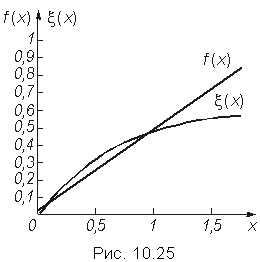
Приведем простейший пример интерполирования в интервале 0 x 1,5 полиномом первой степени функции , заданной аналитически. Расположим узлы интерполирования, а их должно быть n + 1 = 2, при x0 = 0,1 и x1 = 1,0. Тогда система уравнений относительно искомых коэффициентов a0 и a1 будет такой: и . Из ее решения следует а0 = 0,036, a1 = 0,597 и f(x) = 0,036 + 0,597x. Графики функций f(x) и x(х) приведены на рис. 10.25. Они показывают, что точность воспроизведения заданной функции невелика. В заданном интервале 0 x 1,5 наибольшая погрешность |f(x)—x(х)|, т. е. max|f(x)—x(х)| находится на одной из границ интервала при х = = 1,5 и составляет 0,158. Ее можно уменьшить, выбрав другие узлы интерполирования и, тем более, повысив степень интерполирующего полинома. Так, графики той же функции и интерполирующего полинома второй степени с узлами интерполирования x0 = 0,15, x1 = 0,6 и x2 = 1,2 практически совпадают. На рис. 10.26 приведен график разности этих функций, из которого следует, что погрешность в том же заданном интервале не превышает 0,026, т. е. уменьшилась по сравнению с линейной интерполяцией в 6 раз.
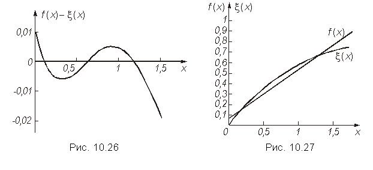
.
В рассмотренном выше примере этому критерию удовлетворяет полином f(х) = 0,071 + 0,518х. Наибольшие его отклонения от функции в интервале 0 Ô x Ô 1,5 расположены при x = 0, х =xm = 0,658 и х = 1,5 (см. рис. 10.27), причем, что очень важно, все они равны по абсолютной величине. Легко понять, что любое изменение наклона (а1) или уровня (а0) полинома f(x), которое ведет к уменьшению экстремального отклонения в двух из трех указанных точек, увеличивает отклонения в оставшейся точке. Таким образом, полином f(x) = 0,071 + 0,518х из всех полиномов первой степени действительно минимизирует абсолютную величину отклонения от функции 1—e–x в интервале 0 Ô x Ô 1,5.
В теории аппроксимации функций доказывается, что наибольшее по абсолютной величине отклонение полинома f(х) степени п от непрерывной функции x(x) будет минимально возможным, если в интервале приближения а Ô х Ô b разность f(х)—x(x) не меньше, чем п + 2 раза принимает свои последовательно чередующиеся предельные наибольшие f(х)—x(x) = = L > 0 и наименьшие f(х)—x(x) = = –L значения (критерий Чебышева).
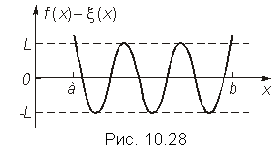
Характер графика разности f(х)—x(x) для полинома f(х) пятой степени, удовлетворяющего этому критерию, приведен на рис. 10.28. Этому же критерию удовлетворяет полином f(х) в рассмотренном выше примере (см. рис. 10.27).
Во многих прикладных задачах находит применение полиномиальная аппроксимация по среднеквадратическому критерию близости, когда параметры аппроксимирующей функции f(х) выбираются из условия обращения в минимум в интервале аппроксимации а Ô х Ô b квадрата отклонения функции f(х) от заданной непрерывной функции x(х), т. е., из условия:
.
В соответствии с правилами отыскания экстремумов решение задачи сводится к решению системы линейных уравнении, которая образуется в результате приравнивания к нулю первых частных производных функции L по каждому из искомых коэффициентов аk аппроксимирующего полинома f(x), т. е. уравнений
Доказано, что и эта система уравнений имеет единственное решение. В простейших случаях оно находится аналитически, а в общем случае – численно. Так, в рассматриваемом примере система уравнений при аппроксимации в интервале 0 Ô x Ô l,5 функции 1- e-x полиномом первой степени такова:
или после преобразований:
Поэтому f(х) = 0,108 + 0,500x.
Заметим, что, как правило, средняя квадратическая погрешность наилучшего равномерного приближения функций f(х) и x(х) лишь не намного отличается от минимально возможной. Обратное утверждение обычно ошибочно, т. е. при квадратической аппроксимации в некоторых участках интервала аппроксимации возможны существенные превышения погрешности аппроксимации (выбросы) по сравнению с теми, которые соответствуют критерию (10.7).
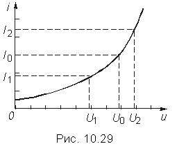
Вернемся к вольт-амперным характеристикам. Общий вид записи степенного полинома, аппроксимирующего ВАХ:
Иногда бывает удобно решать задачу аппроксимации заданной характеристики в окрестности рабочей точки U0. Тогда используют степенной полином другого вида:
Пример. ВАХ нелинейного резистивного элемента i = F(u) задана таблицей:
|
uk |
0.1 |
0.2 |
0.3 |
0.4 |
0.5 |
0.6 |
0.7 |
0.8 |
|
ik |
0.06 |
0.23 |
0.5 |
0.85 |
1.18 |
1.65 |
2.3 |
2.9 |
, откуда .
проходит через три экспериментальные точки, соответствующие узлам интерполяции (см. рис. 10.30, кривая 1). Из рисунка видно, что некоторые экспериментальные точки (например, при UБЭ = 0,4 В) плохо «ложатся» на эту кривую. Кроме того, появляется загиб в нижней части характеристики.
Лучшей аппроксимации можно добиться, если использовать полином четвертой степени и выбрать соответственно пять узлов интерполяции (0,4; 0,5; 0,7; 0,8; 0,9 В). В этом случае кривая тока iБ пройдет через все пять экспериментальных точек.
Однако можно попытаться сохранить вторую степень полинома и улучшить аппроксимацию, воспользовавшись каким-либо другим методом для определения коэффициентов as. Найдем эти коэффициенты, используя среднеквадратическое приближение тока по всем пяти экспериментальным значениям.
Составим уравнения (10.9):
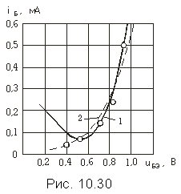
Решение этой системы уравнений дает: a0 = 0,164 мА, a1 = l,07 мА/В и a2 = = 2,069 мА/В2.
График тока при этом определяется полиномом
и показан на рис. 10.30, кривая 2. Эта характеристика является более приемлемой для аналитического описания экспериментальных результатов.
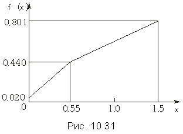
Кусочно-линейная аппроксимация. Наряду с полиномиальной аппроксимацией ВАХ в радиотехнике и связи широко используется их аппроксимация линейно-ломаной зависимостью – совокупностью отрезков прямых, образующих в интервале аппроксимации непрерывную функцию f(x). Так, на рис. 10.31 приведена линейно-ломаная зависимость
составленная из двух отрезков прямых и аппроксимирующая в интервале 0 Ô x Ô 1,5 функцию 1—e-x с абсолютной погрешностью, не превышающей 0,024.
Параметры аппроксимирующих прямых могут быть выбраны так, чтобы в интервале аппроксимации выполнялся критерий (10.7) или (10.8).
В пределах каждого из линеаризированных участков вольт-амперной характеристики применимы все методы анализа колебаний в линейных электрических цепях. Ясно, что, чем на большее число линеаризированных участков разбивается заданная вольт-амперная характеристика, тем точнее она может быть аппроксимирована и тем больше объем вычислений в ходе анализа колебаний в цепи.
Во многих прикладных задачах анализа колебаний в нелинейных резистивных цепях аппроксимируемая вольт-амперная характеристика в интервале аппроксимации с достаточной точностью представляется двумя или тремя отрезками прямых. Графики типичных аппроксимирующих функций приведены на рис. 10.32, а – в, где Uотс – так называемое напряжение отсечки, Uн и Iн – напряжение и ток насыщения в НЭ.
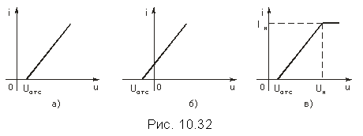
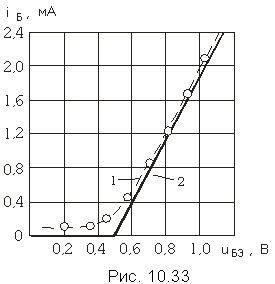
Другие виды аппроксимации вольт-амперных характеристик. Вольт-амперная характеристика идеализированного полупроводникового диода совпадает с характеристикой идеализированного р-п перехода
где I0 - обратный (тепловой) ток, jT - тепловой потенциал (jT @ @ 0,026 В при T = 300К).
Функция (10.12) иногда используется для аппроксимации вольт-амперных характеристик. Ее единственным варьируемым параметром является обратный ток I0, значение которого можно найти, интерполируя заданную характеристику функцией (10.12) в одной из точек. График функции (10.12) подобен приведенному на рис. 10.1, а.
Заметим, что вольт-амперные характеристики реальных полупроводниковых диодов в силу ряда причин отличаются от идеализированных и чаще всего аппроксимируются отрезками прямых.
В ряде случаев вольт-амперные характеристики, подобные приведенной на рис. 10.32, в, аппроксимируются функцией
с тремя варьируемыми параметрами I0, g и U0.
Можно считать, что I = Iн, U0 - соответствует значению напряжения U, при котором i = 0,5Imax, а постоянная g находится по известной крутизне S = dI/dU аппроксимируемой вольт-амперной характеристики в точке U0 из условия S(U0) = 0,5I0.
Составление уравнений состояния цепи на основании законов Кирхгофа. Из предыдущих разделов известно, что в общем случае, когда цепь содержит nв ветвей (в том числе nт источников тока) и nу узлов, число неизвестных токов (напряжений) равно (см. § 1.4) nв – nу + 1 – nт. Для отыскания такого числа неизвестных составляется система уравнений по законам Кирхгофа.
По первому закону Кирхгофа (ЗТК) записывается nу – 1 уравнений вида (1.16):
где m – число ветвей, сходящихся в узле.
По второму закону Кирхгофа (ЗНК) записывается nв – nу + 1 уравнений вида (1.17):
где п—число ветвей, входящих в контур.
Если цепь содержит, кроме линейных, также и НЭ, то в системе уравнений, описывающей состояние цепи, появятся уравнения вида ik = Fk(uk). Методика составления уравнений состояния цепи на основе законов Кирхгофа остается такой же, как и в случае линейных резистивных цепей (см. гл. 2, 3).
Составим, например, систему уравнений состояния для цепи, схема которой изображена на рис. 10.13. Пусть ВАХ нелинейного элемента аппроксимируется выражением
Зададимся положительными направлениями напряжений и токов. Цепь содержит один независимый контур (I) и один независимый узел (1). Уравнения, записанные по ЗТК и ЗНК, имеют следующий вид:
К этим уравнениям дописываем уравнение (10.14). Неизвестными в данной системе уравнений являются напряжение Uн и токи I1 и Iн. Всего три неизвестных. Для их отыскания составлено три уравнения. Как видим, процесс составления системы уравнений такой же, как и в случае линейной цепи. Однако процесс решения полученной системы, которая содержит нелинейное уравнение, может существенно затрудниться. Для большинства относительно сложных цепей аналитического решения системы уравнений может и не существовать. Тогда приходится прибегать к численным методам решения.
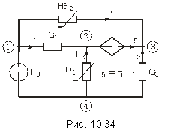
Составление уравнений состояния цепи методом узловых напряжений (потенциалов). Как известно, переменными в методе узловых напряжений являются напряжения nу – 1 узлов по отношению к базисному узлу.
Рассмотрим в качестве примера схему, изображенную на рис. 10.34. Пусть ВАХ нелинейных элементов описываются выражениями I = aU3 для элемента НЭ1 и I = bU2 для элемента НЭ2. В схеме имеется зависимый источник (ИТУТ) с током I5 = HiI1.
Приняв узел 4 за базисный, имеем три независимых узла: 1, 2 и 3. Токи ветвей выражаются через узловые напряжения U1, U2 и U3 следующим образом:
Составим уравнения для узлов 1, 2 и 3 по ЗТК:
Подставив в эти уравнения значения токов из (10.21), получим
Уравнения узловых напряжений получены в виде системы трех нелинейных уравнений с тремя неизвестными узловыми напряжениями. Можно уменьшить число уравнений, если из первого уравнения выразить U2 через U1 и U3 и исключить его из двух остальных уравнений. В результате получим систему двух нелинейных уравнений с двумя неизвестными напряжениями узлов 1 и 3.
Решить данную систему уравнений можно одним из численных методов (например, известным из математики методом Ньютона— Рафсона). Определив узловые напряжения, можно вычислить токи и напряжения ветвей.
Аналитические методы нахождения рабочей точки. Задача о нахождении рабочей точки может решаться и аналитическими методами, если зависимость I(U) нелинейного резистивного элемента задана аналитически. Она сводится к решению нелинейного уравнения
относительно напряжения U =U0 в рабочей точке резистора. Так например, в цепи с идеализированным выпрямительным диодом, у которого , где I0 и jT – некоторые постоянные, задача нахождения рабочей точки приводит к решению трансцендентного уравнения относительно неизвестного напряжения U = U0 с последующим нахождением тока I0 = (Е—U0)/R в рабочей точке диода.
Если вольт-амперная характеристика нелинейного резистора аппроксимирована полиномом I = a1U + a2U2 + ... + anUn, то уравнение (10.23) будет представлять собой алгебраическое уравнение степени п относительно искомого напряжения в рабочей точке и, как известно, в общем случае может быть решено лишь численно, если n > 4.
В заключение следует подчеркнуть, что нелинейный характер взаимозависимостей между реакциями и воздействием в анализируемых цепях обусловливает неприменимость к ним в общем случае принципа наложения, лежащего в основе высокоэффективных методов анализа и синтеза линейных электрических цепей. По этой же причине только в редких случаях удается найти решение задач анализа колебаний в аналитической форме, даже в таких простейших нелинейных цепях, как нелинейные резистивные цепи.
Для поддержания постоянства (стабилизации) напряжения питания активных электрических цепей при возможных колебаниях первичного питающего напряжения и изменениях сопротивления нагрузки используются устройства, получившие название стабилизаторов постоянного напряжения.
Схема простейшего стабилизатора приведена на рис. 10.35, а. В него входят генератор первичного питающего напряжения, задающее напряжение Uг которого под воздействием дестабилизирующих факторов может меняться относительно его среднего значения, и стабилитрон, подсоединенный параллельно нагрузке. Его вольт-амперная характеристика была приведена на рис. 10.1, б. Внутреннее сопротивление генератора Rг и сопротивление нагрузки Rн считаются чисто резистивными.
При анализе работы стабилизатора цепь, внешнюю по отношению к стабилитрону, заменим эквивалентным генератором с задающим напряжением U0 и внутренним сопротивлением R0. После этой замены схема анализируемой цепи преобразуется в схему рис. 10.35, б. На этой схеме через Uн обозначено напряжение на зажимах нагрузки, которое совпадает с напряжением в рабочей точке стабилитрона (рис. 10.35, а). Зная последнюю, можно найти токи в ветвях исходной цепи: Iг = (Uг—Uн)/Rг, Iн = Uн/Rн, Iд = = Iг—Iн.
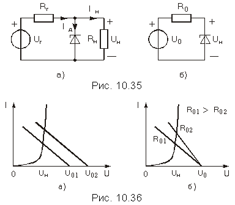
Естественно, что эффект стабилизации достигается ценой рассеяния энергии в стабилитроне и резисторе Rг.
1. Какими уравнениями описываются нелинейные резистивные цепи, какими – нелинейные цепи, содержащие реактивные элементы?
2. Какие значения может принимать дифференциальное сопротивление нелинейного элемента?
3. Какой элемент цепи обладает одинаковыми статическим и дифференциальным сопротивлением?
4. Что называется рабочей точкой вольт-амперной характеристики нелинейного элемента?
5. Приведите пример многозначной вольт-амперной характеристики нелинейного элемента?
6. Объясните на примерах трехзначных характеристик N-типа и S-типа возможность получения неоднозначного решения задачи нахождения рабочей точки вольт-амперной характеристики резистивных нелинейных элементов?
7. В каком режиме (постоянного или переменного тока) могут быть сняты статические вольт-амперные характеристики резистивных нелинейных элементов?
8. Нарисуйте схему измерительной установки для снятия статической вольт-амперной характеристики резистивного двухполюсника.
9. Применим ли метод эквивалентного генератора к нелинейной цепи? К ее линейной части? Как определяются характеристики этого генератора?
10. Какие из указанных ниже законов справедливы для нелинейной цепи (нелинейного элемента): закон Ома, закон Кирхгофа, закон Джоуля-Ленца?
11. В чем отличие метода эквивалентных преобразований для линейной и нелинейной цепей?
12. Найдите ток i2 и напряжение u2 на нелинейном элементе (рис. 10.37), если U0 = 6 В, I0 = 3 А, R1 = 8 Ом, R2 = 6 Ом, R3 = 3 Ом, i = 0,1u2 А.
Ответ: i2 = 1,6 А, u2 = 4 В.
13.
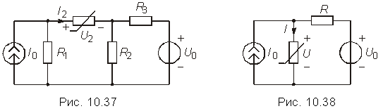
Ответ: I = 9 мА, U = 3 В.
Ток и напряжение, вызванные генератором тока II = 4 мА, UI = 2 В; ток и напряжение, вызванные генератором напряжения, имеют те же значения III = 4 мА, UII = 2 В. В результате получаем
I = II + III = 8 мА,
U = UI + UII = 4 В.
Cледовательно, принцип наложения для нелинейной цепи не справедлив.
14. Найдите токи и напряжения в цепи (рис. 10.39), если I0 = 0,2 А, R1 = 100 Ом, i = 0,01u2 А и определите соответствующие значения статических и дифференциальных сопротивлений нелинейного элемента и параллельного соединения сопротивления R1 и нелинейного элемента.
Ответ: I = 0,16 А, I1 = 0,04 А, Rст = 25 Ом,
Rст экв = 20 Ом, Rд = 12,5 Ом, Rд экв = 11,1 Ом.
15. Найдите ток и напряжение в цепи (рис. 10.40), если u = i2 В, U0 = 11 В, R1 = 10 Ом. Определите новое значение R1, при котором дифференциальное сопротивление в новой рабочей точке вольт-амперной характеристики нелинейного элемента будет равно 1 Ом.
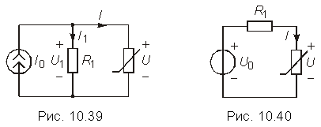
16.
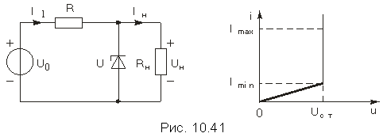
Ответ: 120 Ом Rн 600 Ом.
17. Найдите величину сопротивления R3 (рис. 10.42), при которой I = 3 мА, если U0 = 16 В, R1 = R2 = 2 кОм, I = (2U – 1)×10-3 А. Определите в рабочей точке дифференциальное и статическое сопротивление нелинейного элемента.
Ответ: R3 = 1 кОм, Rст = 666,7 Ом, Rд = 364 Ом.
18. Найдите вольт-амперную характеристику параллельного соединения НЭ (рис. 10.43), если i1 = 0,02u2 А, i2 = 0,08u2 А. Определите величину R, при которой i = 0,4А, если u0 = 6В.
Ответ: R = 10 Ом.
19. Найдите токи и напряжения в цепи (рис. 10.44), если U0 = 30 В, I0 = 3 А, u1 = В, i2 = 0,01u22 В.
Ответ: i1 = 1 А, u1 = 10 В, i2 = 4 А, u2 = 20 В.
20. Найдите токи и напряжения в цепи (рис. 10.45), если U01 = = U02 = 6 В, u1 = В, u2 = В, R = 0,8 Ом.
Ответ: I1 = 1 А, I2 = 4 А, I3 = 5 А, U1 = U2 = 2В, UR = 4 В.
21.
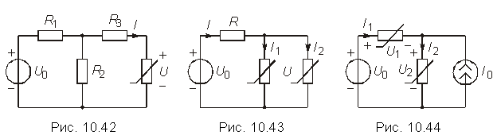
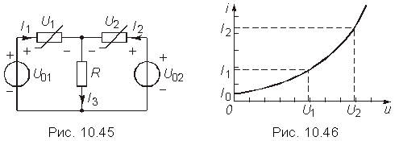
;
.
22. Заданную в виде таблицы (Uk, Ik) ВАХ нелинейного резистивного элемента аппроксимируйте линейной функцией .
| Uk | 0 | 0.1 | 0.2 | 0.3 | 0.4 | 0.5 | 0.6 | 0.7 | 0.8 |
| Ik | 0 | 0.26 | 0.54 | 0.72 | 0.93 | 1.1 | 1.18 | 1.28 | 1.36 |
Коэффициент а1 определить методом наименьших квадратов.
Ответ: i = 1,94u.
23. Падающий участок ВАХ нелинейного резистивного элемента i = F(u) задан таблицей:
| Uk | 0.2 | 0.25 | 0.3 | 0.35 | 0.4 |
| Ik | 9.0 | 6.75 | 4.6 | 3.0 | 2.0 |
Аппроксимируйте характеристику на отрезке [0.2; 0.4] линейной функцией методом наименьших квадратов.
Ответ: i = -35,3 + 15,7u.